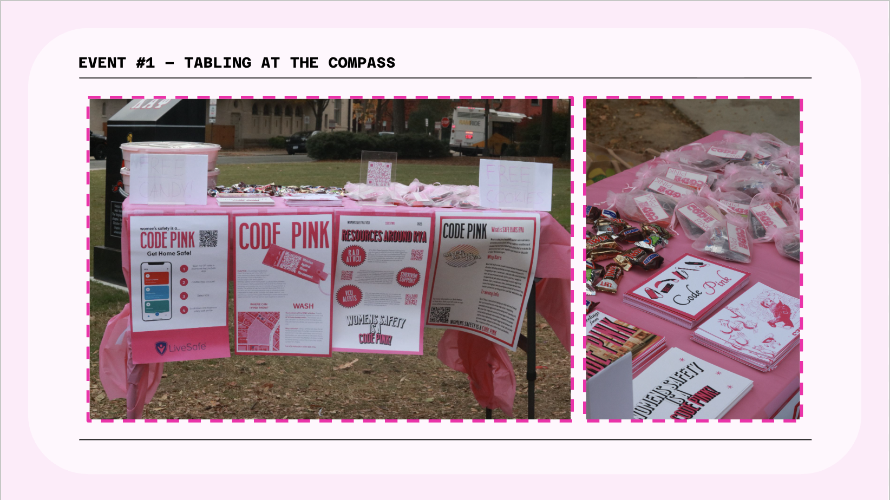
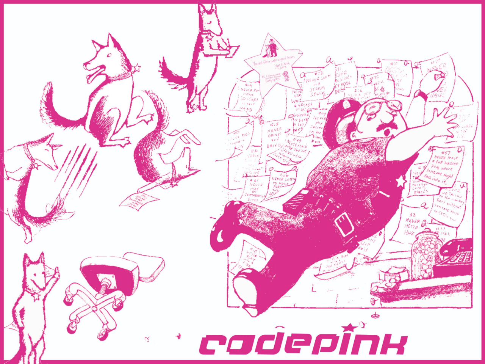
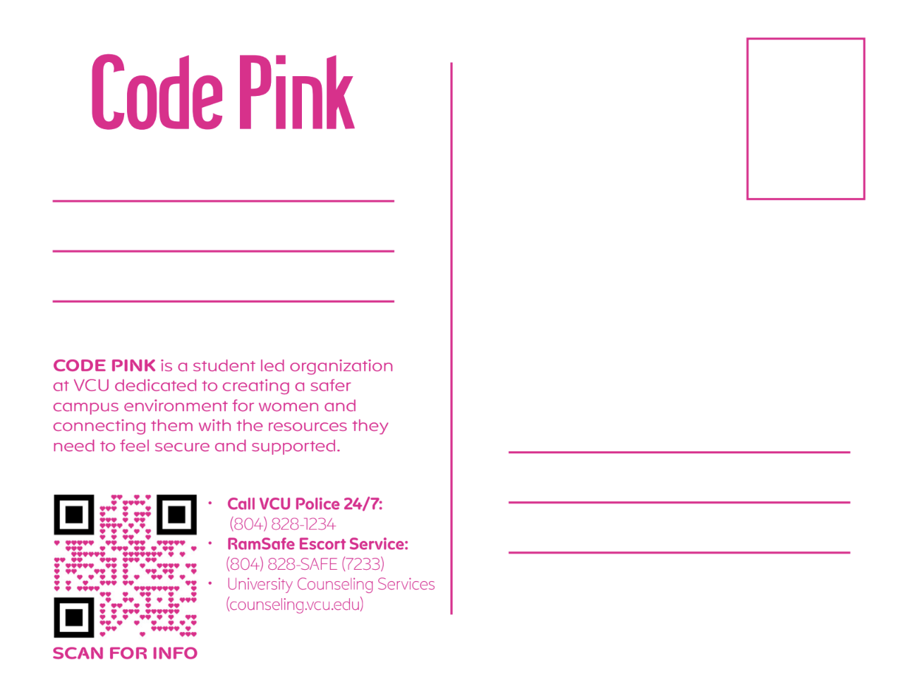
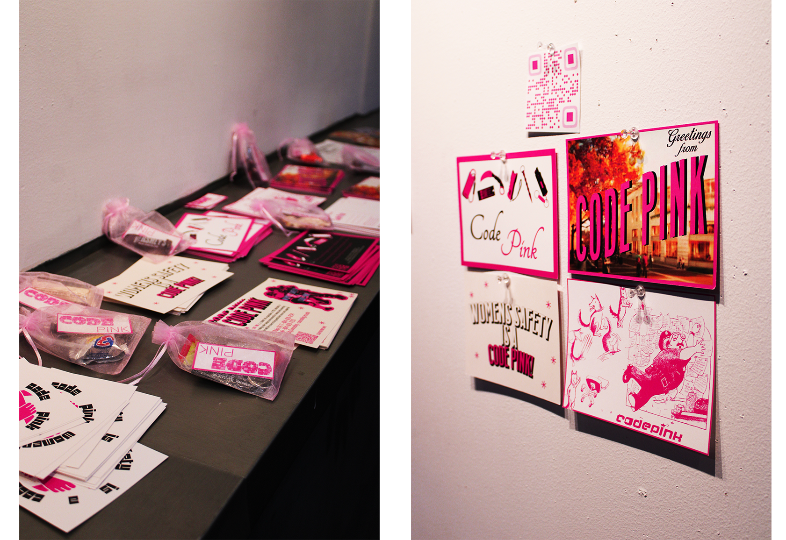
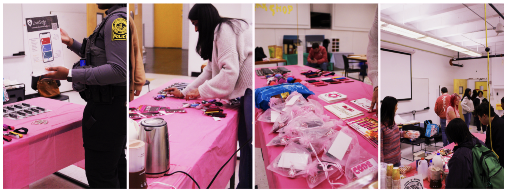
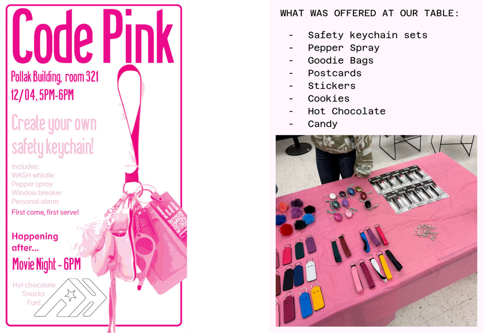

In my Human-Centered Design class, we were tasked with identifying a community issue to help address. I chose to focus on street harassment against women on the VCU campus. My topic was selected for the project, and I served as the group leader throughout the semester-long process. As a group, we conducted individual research, during which I discovered the VCU Police Department’s WASH (Whistles Against Street Harassment) initiative. I took the initiative to reach out to VCU Police, and we ultimately partnered with them to promote and distribute WASH whistles through planned on-campus events.

Event 1:

Image of our table from our tabling event we each made a poster and handed out: Goodie bags with the WASH whistles, our post cards, candy, and cookies. in order to get a goodie bag you had to fill out our survey. in order to get a cookie you had to download the live safe app (witch is another campus resource)
Postcard:


Postcard I designed inspired and using the imagery from the children's book "Officer Buckle and Gloria" had a Qr code to all of our teams research and recourses.


This was us putting our goodie bags together. each goodie bag had a code pink sticker, a WASH whistle, and a piece of candy.

With the extras from the event we displayed them in out art building (the pollack building) for people to look at and take. all of my postcards ended up getting taken and so did the rest of our goodie bags.
VCU Police Video:
The VCU Police Department reached out to our team to create a promotional video for the WASH whistles to be shared on their social media platforms. They also helped promote our on-campus event through the video and on their Instagram account.
Event 2:

For event 2 it had gotten cold outside in Richmond so we decided to have an indoor event. The VCU police were nice enough to come talk to students and give us some safety stuff to hand out.
